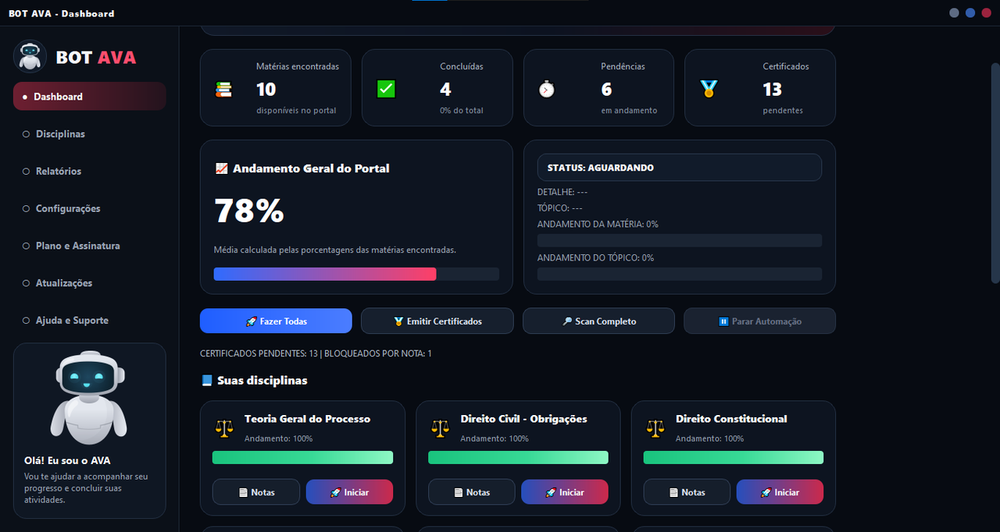
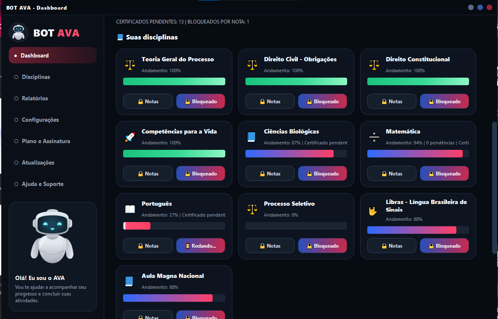
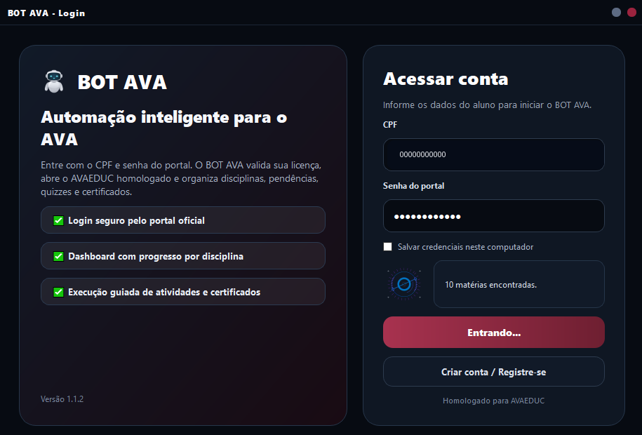

Dashboard geral
Resumo de matérias, concluídas, pendências, certificados e andamento geral.
O BOT AVA identifica disciplinas, verifica pendências, acompanha quizzes, certificados e progresso do portal. Ideal para quem quer ganhar tempo e ter controle visual do que falta fazer.

Interface escura, simples e objetiva para o aluno acompanhar tudo sem se perder no portal.
Resumo de matérias, concluídas, pendências, certificados e andamento geral.

Cards com status, progresso, notas, bloqueios e ações rápidas por matéria.

Entrada por CPF, validação de licença e acesso guiado ao ambiente homologado.
O BOT AVA foi pensado para reduzir a confusão do portal e centralizar as ações importantes em uma tela clara.
Baixe o aplicativo oficial e abra no seu computador.
Informe CPF e senha do portal para o BOT AVA acessar o ambiente correto.
O painel identifica matérias, tópicos, pendências, certificados e progresso.
Veja status, logs e evolução enquanto o sistema trabalha nas tarefas repetitivas.
O foco é transformar um portal cheio de telas em uma rotina visual, guiada e acompanhável.
Resumo visual do andamento, pendências e certificados em uma tela única.
Busca pendências reais no AVA e evita depender só de progresso salvo localmente.
Navega pelo portal, identifica atividades e executa rotinas repetitivas com status em tempo real.
Ajuda a localizar certificados pendentes, liberados ou bloqueados por nota.
Validação online, plano ativo, vencimento e liberação após pagamento.
Recuperação de Chrome, prevenção de suspensão e atualização automática do app.
Use sempre o link oficial. Após instalar, entre com seu CPF, valide sua licença e acompanhe tudo pelo dashboard.
Planos com liberação online, pagamento Pix dentro do app e suporte via WhatsApp.
Ideal para acompanhar um ciclo acadêmico com dashboard, scan e automação assistida.
Para quem quer usar por mais tempo, manter atualizações e acompanhar dois ciclos com tranquilidade.
Baixe o aplicativo ou fale com o suporte para tirar dúvidas antes de comprar.
O foco atual é o ambiente AVAEDUC. Outros ambientes podem exigir homologação específica.
Não. O BOT AVA é uma ferramenta independente de apoio, organização e automação assistida.
Sim. O aplicativo é para Windows 10/11 e deve ser baixado pelo link oficial desta página.
A licença é vinculada ao CPF. O pagamento Pix pode ser gerado no app e a liberação é consultada automaticamente.
Sim. O suporte é feito pelo WhatsApp oficial informado nesta página.